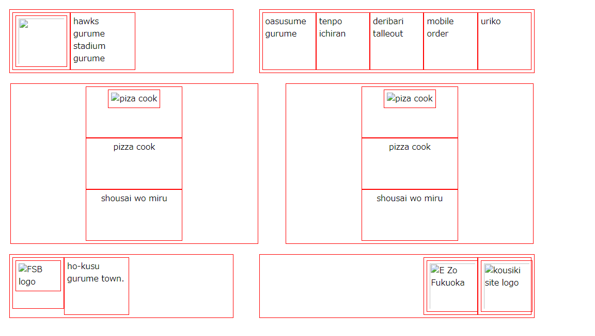
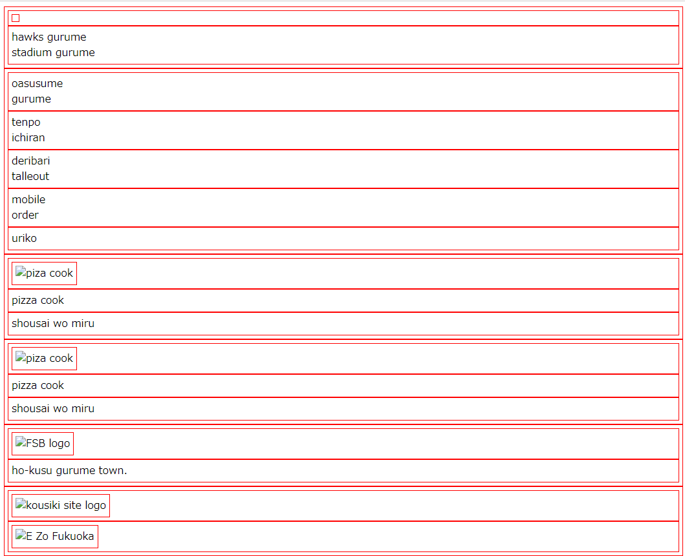

<!-- 
    【製作者情報】
    学籍番号：
    氏名：　　角田
 -->
<!-- 
    残作業 
    ・全体の配置の見直し
    　
    ・メニュを表で作成しなおす。
    ・背景色の設定
    ・文字位置の設定（中央ぞろえなど）

-->
<div style="border: double 2px gold;background-color: gold;margin-bottom: 20px;">
    次の画面を参考にしてレイアウトする<br>
    <br>
    元の画面レイアウトは次状態になっていること<br>
    <br>
    
</div>


<!DOCTYPE html>
<html lang="en">
<head>
    <meta charset="UTF-8">
    <meta http-equiv="X-UA-Compatible" content="IE=edge">
    <meta name="viewport" content="width=device-width, initial-scale=1.0">
    <title>Document</title>
    <link rel="stylesheet" href="sample.css">
</head>
<body>
<!-- 角田 -->
    <main>

        <div>
            デリバリー情報
        </div>
<div>
    店舗名
</div>
<div>
    ドミノピザ大橋駅南口
</div>
<div>
    住所
    〒815-0003
    営業時間11:00~24:00
    福岡市南区大橋
    092-557-8820
</div>
    <div>
        メニュー
        商品１マルゲリータ
        商品２クワトロ　ニューヨーカー
        商品３ビックチーズ
        商品４ビックペパロニ＆dソーセージ
    </div>


        


    </main>
</body>
</html>